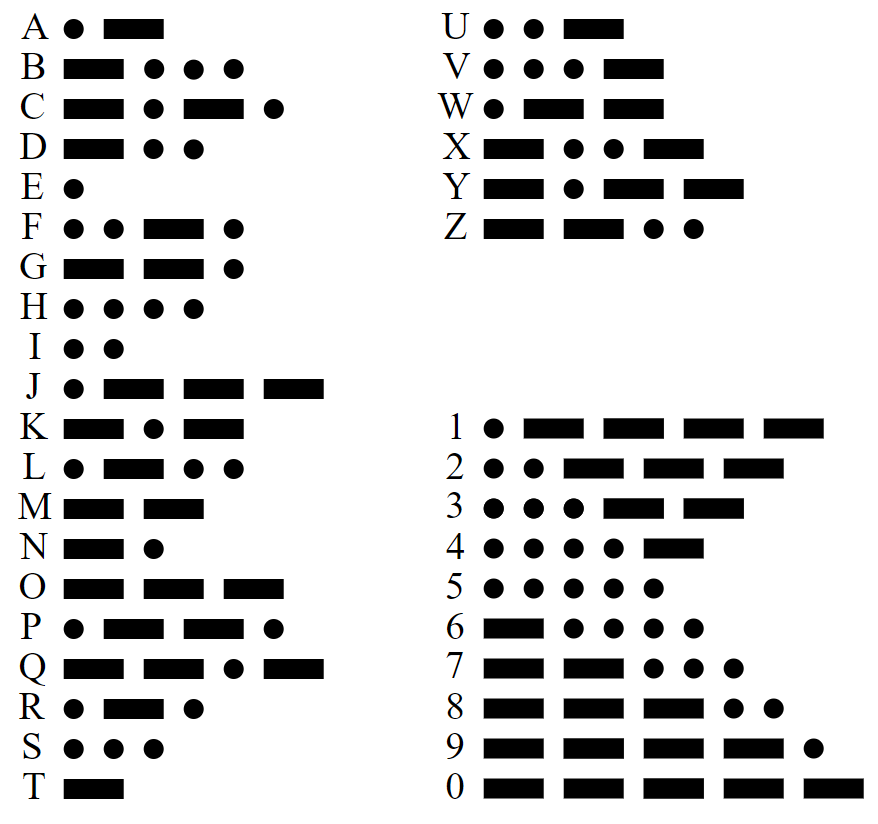

Morse Reciever
How it works:
Press the button and input morse code with any key.
Press R to Clear the screen.
Timing is based on Farnsworth, with 20 wpm on intra-character speed and 10-15 on inter-character speed and words.
Press to Start
Clear
Connect
